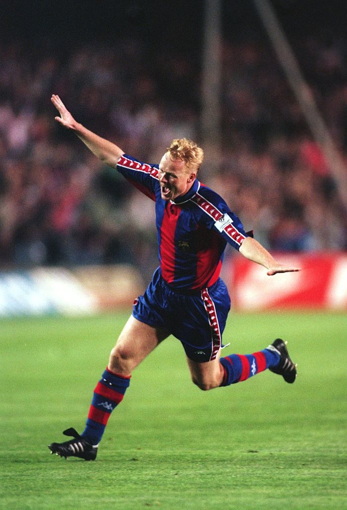
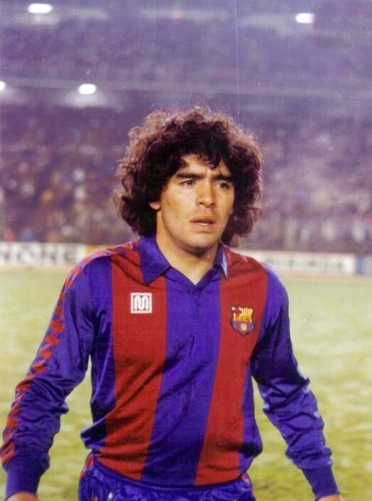

 FC Barcelona is een voetbalclub uit Barcelona, Catalonië. De club behoort tot de Europese wereldtop en is met zijn 95 trofeeën de meest succesvolle voetbalclub in Spanje. De clubkleuren zijn paars-blauw en het stadion van FC Barcelona is Camp Nou. Aartsrivaal van FC Barcelona is Real Madrid. Wedstrijden tussen deze clubs staan bekend als El Clásico. Barcelona is opgericht op 29 november 1899 door de Zwitser Johan Gamper. FC Barcelona wordt bestuurd door een president. Deze president wordt iedere vier jaar gekozen door de leden van FC Barcelona, de socios. De huidige president is Josep Maria Bartomeu. De eerste jaren speelden vooral Zwitsers, landgenoten van Gamper, en Engelsen in het eerste elftal  Voor barcelona speelde grote namen onder andere Ronald Koeman, Johan Cruijff en Maradonna.